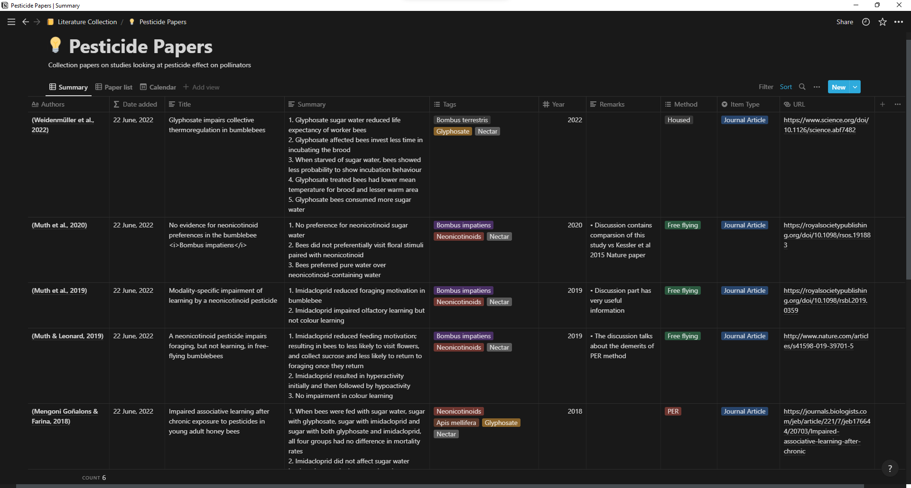
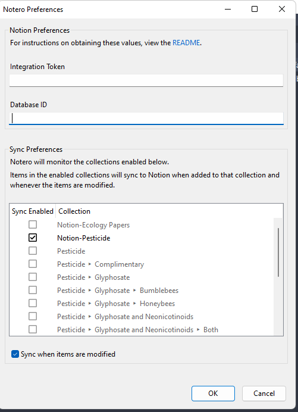

[1] "2022-08-06 15:10:33 IST"1 TL;DR
- Use Notion to build a literature database that can integrate with directories in Zotero with the help of the Notero plugin
- Install Notion, Zotero and the Notero plugin
- Duplicate the literature template to your Notion database
2 Literature tracker using Notion and Zotero
This is a follow-up article from my earlier post on My Notion story. If you don’t know what Notion is or how to install it, please refer to my earlier article for the background information.
In this article, we will aim to build a literature tracker that looks similar to the one below. It will be automated via the Notero plugin integrating Zotero with Notion.

2.1 Install Zotero
The first thing to do is to download and install Zotero, a free-to-use reference manager that you can use to categorize and manage your research article collection. You should also create an account in Zotero and log in using that account in your Zotero app.
2.2 Installing Notero plugin
Now we are going to install a plugin for Zotero, called Notero by David Vanoni, which acts as a link between Zotero and Notion. This is what syncs your Zotero library to your Notion database.
- Go to the Github page of Notero and download the
notero-0.3.5.xpifile under the assets section. You can right-click on the file and save it by clicking on ‘save link as’
Video: Downloading the plugin (click here)
- Go to the Zotero app and click on ‘Tools’ and then click ‘Add-ons’. Then in the new window, click on the Settings button and then click on ‘Install add-on from file’. Then browse to where your
notero-0.3.5.xpifile is downloaded and then install it.
Video: Installing the plugin
2.3 Configure Notero plugin
After installing Notero, you can find a new option called ‘Notero Preferences’ under the ‘Tools’ section. To have the plugin work, you need to provide an ‘integration token’ and a ‘database ID’.
To get the integration token, go to Notion integrations and click on ‘New integration’. Give a suitable name (something like ‘Notero integration’ for the ease of finding it) and then select your workspace in Notion. You can keep the rest of the options in their default setting and then click save. You will then get your integration token.
Video: Getting the integration token
- Go back to your Notion app and then select the database which you want to integrate with the Notero plugin. If you are creating a database from scratch then make sure that the table that you are creating has the following named columns.

If you want to use my template then click here and click on Duplicate. It contains most of the relevant columns and will save you time from creating it from scratch.

- Once you have the database that you want to integrate with Notero, click on the ‘Share’ button and click on the ‘copy link’. Paste the link in a text editor and copy the first 36 characters after your workspace name. This is your ‘database ID’.
The format of the copied link would in this form
https://www.notion.so/{workspace_name}/{database_id}?v={view_id}
Copy the {database_id} part
Video: Getting the database ID
- Then finally paste your ‘integration token’ and the ‘database ID’ into the ‘Notero Preferences’ window under the ‘Tools’ section in Zotero. Then select the directory in Zotero that you want to integrate with your Notion database. Now you have successfully configured the Notero plugin.

Now go to the associated database and click ‘Share’. Search for your integration and click invite. Any research article that is present in your directory associated with the Notero plugin will now automatically be synced to your associated Notion database. Notero plugin allows one-time sync between Zotero to Notion but not the other way around. So any changes that you do in the Notion database won’t be reflected in your Zotero database.
Video: Notero in action
There is a reason why I said it’s a one-time sync, any modifications that you do for already existing files won’t be reflected in Notion. But this can be easily fixed by assigning the existing papers to a tag, you can also delete it if you dont want it to appear in the database.
Video: Updating existing files with a new tag
There are some limitations on what the plugin is capable of doing, but it’s still better than nothing. You can learn more about the plugin from its Github repo page.
So there you have it, your very own literature tracker made using Notion and integrated with Zotero using the Notero plugin. I am so proud of you 👍
Thank you David Vanoni and the developers who contributed to developing the Notero plugin. You can share your feedback and thoughts about the templates in the comment section below.
Last updated on
Reuse
Citation
BibTeX citation:
@online{johnson2022,
author = {Jewel Johnson},
editor = {},
title = {Using {Notion} and {Zotero} to Build a Literature Tracker},
date = {2022-06-29},
url = {https://one-carat-blog.netlify.app//posts/notion_literature},
langid = {en}
}
For attribution, please cite this work as:
Jewel Johnson. 2022. “Using Notion and Zotero to Build a
Literature Tracker.” June 29, 2022. https://one-carat-blog.netlify.app//posts/notion_literature.